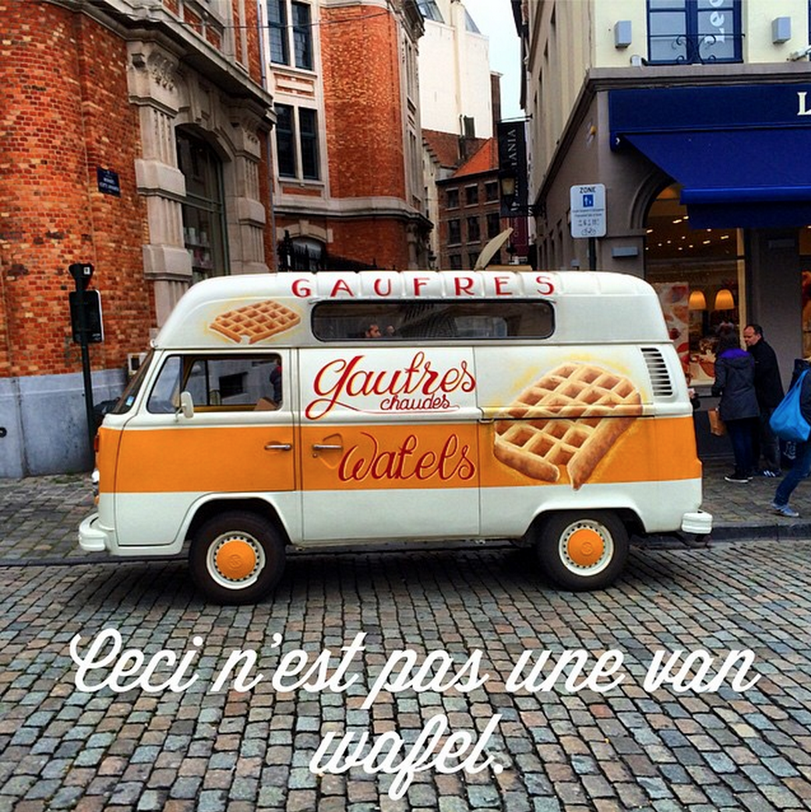
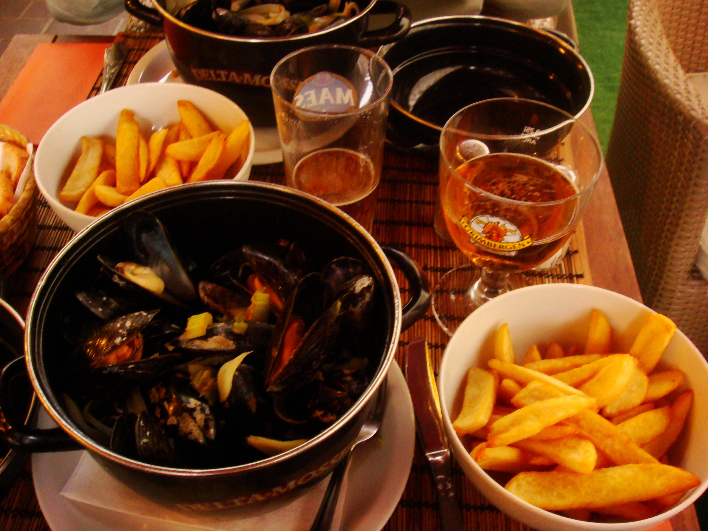

Brussels for 48 hours, with my best friend, a random meet up with cousins, a load of waffles, culture, history, beer and good times. Here's how it went.

Staying in a hotel is sweet, but staying in a central hotel can be shit expensive, when on a budget and wanting to avoid tourist traps hit up Airbnb, its savage value, and you can find little gems in central locations. We opted for a private room in an apartment located on Rue Royal, which has the bus and tram right on the door step. Advantage to staying in a "shared" accommodation on Airbnb is you get to ask your host, places to avoid and places to hit up.

Brussels is a small city, but there is a tonne of shit to do, everything from museums, nightlife, sight seeing, eating, sports etc. the list is endless.
Brussels has so much history, there are museums everywhere! A quick google search will bring up lists of museums to visit, myself and Mark (my best friend his name comes up a bit) had in advance planned out what we wanted to see.
When traveling I always try to organise three main things to do, and then add in other stuff to see/do, such as bit of shopping, jogging or even just grabbing traditional moules et frites for dinner and then end with traditional Belgian waffle with Nutella... which are to fucking die for!
So the three main objectives. 1) See the Manneken Pis, 2) Visit the Rene Margarite Museum, and 3) See the Grand Palace.
Manneken Pis
This little statue is so weird, lil boy taking a wee, even stranger is the Belgians dress him up in Elvis costumes, and other weird outfits. This is a tourist hot spot so expect it to be busy. Head back at night on your way back from a night out and there will be no one else around, which is magic lets you take in the moment . Located @ 1000, Bruxelles.Rene Margarite Museum
The Belgian surrealist artist, if like me you haven't a shittiest clue about art, a walk around this museum will blow your mind, the art is crazy. Definitely worth a visit. Costs €10 opens at 10am closes at 5pm. Located @ 1 Place Royale.Grand Palace
The Grand Place or Grote Markt is the central square of Brussels. It is surrounded by opulent guildhalls. Its an amazing place, so beautiful, dotted street performers, cafes loads of activity. Also every two years in August, an enormous "flower carpet" is set up for a few days. A million colourful begonias are set up in patterns.Cafe
I love nothing more then getting up relatively early, hitting up a coffee shop, and scoffing down a few warm pain ou chocolates and a mug of coffee. But most importanly you get to chill and plan the day with free Wifi (Travel Hack #2).
 le pain quotidien Sablon central, good music and free wifi.Go to the Grand Sablon square, loads of coffee shops and chocolatiers, spend a bit of time here exploring and sampling the best chocolate in the world, my favourite Pierre Marco. Also this square hosts a quirky antiques market which is worth a look, especially given most the stuff on sale, is from all over the world. On every Sunday morning.

Dinner
On this trip I ate more McDonalds than I care to even mention… but in-between that shit, we also ate the traditional moules et frites, any place along the Grand Palace is good for this quick bite. Wanting to try actual Belgian food that real Belgians eat check out Peï & Meï located @ Centre-Ville, Marolles .
 Moules et frites - one of the million places along Grand Palace.Nightlife in Brussels is pretty good, places stay open till around 5am and drink isn't crazy expensive €4 beer, €20 bottle of red. We went to a bar just of Grand Palace called Delirium @ Impasse de la Fidélité 4A, 1000, which was decent, but was full of Erasmus students and only the odd Belgian. We also went to a local hangout called Sounds Jazz Club @Rue de la Tulipe 28, which was amazing and had live reggae music, this place was hopping and full of locals definitely worth checking out. If you are interested in hanging in a sports bar or have a game to watch like we did then, hit up Fat Boys @ Luxemburgplein 5, 1050 Elsene.
That's a wrap
Getting to take in a few museums, seeing the sights, sampling the food (including snails) made for a great weekend. Meeting up with my cousins in the most touristy place Hard Rock Cafe and sharing a few bottles of wine was completely unexpected. But made the weekend even more amazing. Having only three core things planed may seem a bit light but I honestly believe if you don't leave room for spontaneity your trip will be predictable and shit, you need to wander around and “go get lost in a place it's the best way to find what you have been looking for”.
I will leave you with a picture of my snail eating experiance @ Manneken Pis
Know someone going to Brussels share this article with them.